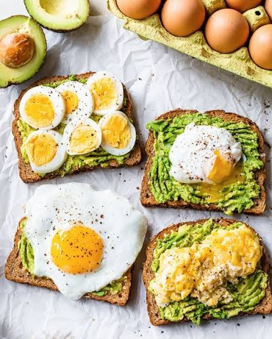

Avocado Egg Toast

Description
This healthy avocado and egg toast features crispy multigrain bread topped with creamy, lemon-spiked mashed avocado and freshly cooked eggs, finished with a dash of chilli flakes.
Ingredients
- 2 slices multigrain bread
- 1 ripe avocado
- 2 fresh eggs
- 1 teaspoon lemon juice
- 1 pinch salt
- 1 pinch black pepper
Method
- Toast the Bread: Place the slices of multigrain bread in a toaster or under a grill until crisp and golden brown.
- Mash the Avocado: In a small bowl, scoop out the flesh of the ripe avocado. Add the lemon juice, salt, and black pepper, then mash together using a fork.
- Cook the Eggs:Heat a small non-stick pan over medium heat. Poach or fry your eggs to your desired level of doneness.
- Assemble:Spread the mashed avocado evenly over the warm, toasted bread slices.
- Serve: Place the cooked eggs gently on top of the avocado layer. Garnish with a sprinkle of chilli flakes and serve warm.